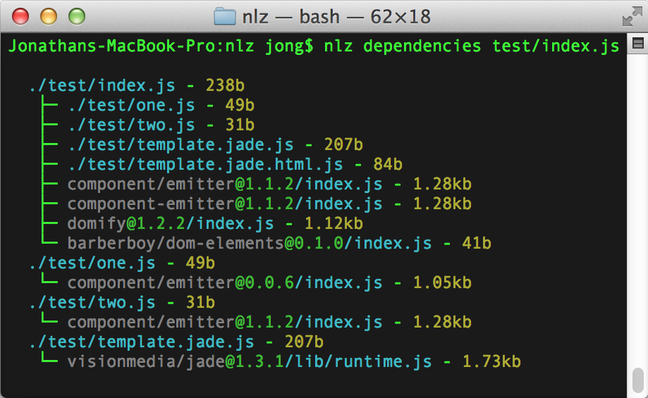
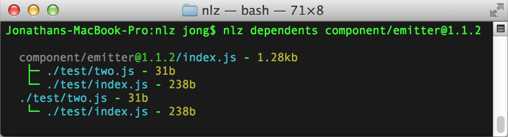
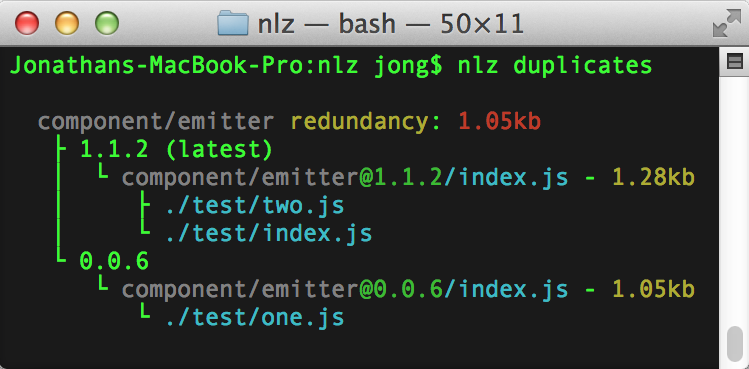
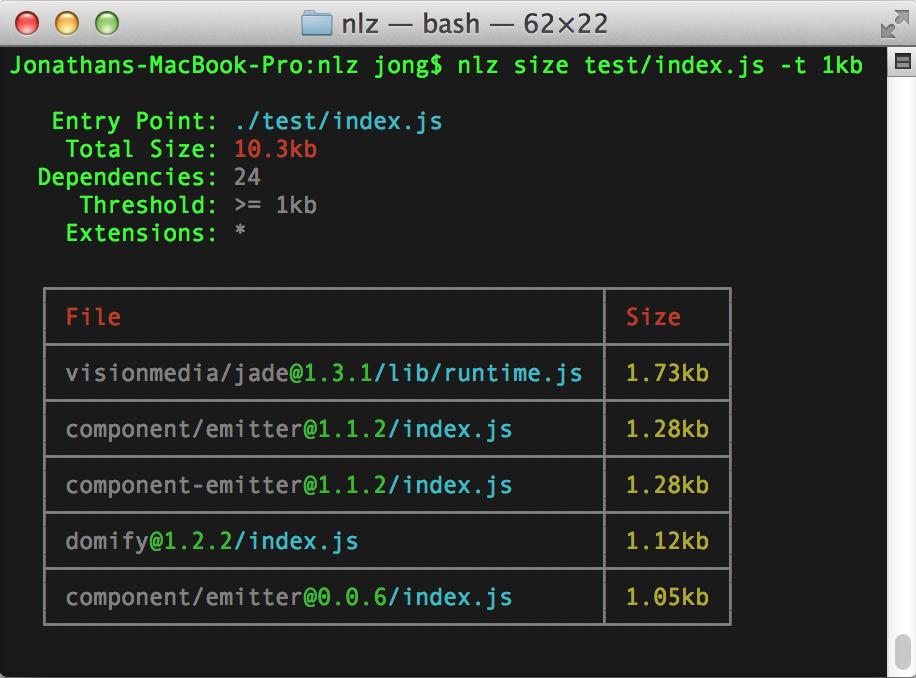

Triage
Normalize is split into multiple repositories. Most of these repositories can be found within the Normalize GitHub organization. When requesting features or reporting bugs, please try to open an issue in the correct repository.
- discussions - a repository for any general discussions. Don't know where to open an issue? Want to ask for support? Open an issue here.
- normalize.github.io - this Normalize.IO homepage and documentation
- proxy.js - the normalization proxy
- nlz - the command line
nlz(1)utility - transforms.js - all the transforms supported by both the proxy and
nlz(1) - The Polyfills Organization - for anything having to do with browser support, polyfills, and transpilation
Normalization Proxy
This is the public HTTP API for https://nlz.io as well as any normalize-proxy. If you're interested in setting up your own proxy, consult the normalize-proxy repository itself.
URL Structure
All URLs have the form:
https://nlz.io/<remote>/<user>/<project>/<version>/<file...>
Different proxies will have different hostnames.
The version and file may not be included in some end points.
Protocol
Every proxy must serve via HTTPS and SPDY/HTTPv2, even with a self-signed certificate. The primary reason is that some browsers intend to not support SPDY without SSL.
Remote
A supported remote's name, for example github/.
Aliases will also be supported and will simply redirect to the canonical short name.
For example, github.com and raw.githubusercontent.com would redirect to github.
User
The owner of a repository.
If the remote does not have a namespace, the user should simply be -.
https://nlz.io/npm/-/escape-regexp/*/index.js
Project
The name of the project/module/component.
Version
Any version as defined by http://semver.org v2.0.0.
You should not include leading vs and = in single versions
Versions can also be git branches and commit SHAs if the remote is accessed via git.
API End Points
GET File
You may still GET files directly, even with transforms.
All of the files' dependencies will be SPDY pushed to the client.
A redirect may be returned as a response.
If this is the case, the redirect location will be SPDY pushed as well.
Each file can have the following query strings.
These are only valid when exact, so don't include a trailing =.
Only one query string can be used at a time:
?source- return/redirect the source file and its dependencies all without any transformations applied. Useful for building server-side.
If any of these query strings are included, then all the pushed dependencies will also include the same query string.
GET pull
GET https://nlz.io/<remote>/<user>/<project>/pull
For git remotes, this will git fetch -f the entire repository to the proxy,
updating all the versions.
For non-git remotes, this will check for the latest version of the project and install it locally.
You may consider this the optional "publish" step of Normalize.IO.
GET versions.json
GET https://nlz.io/<remote>/<user>/<project>/versions.json
Will return an array of versions that are currently available on the proxy.
If no versions are installed,
a 404 and an empty array will be returned.
If you pushed a new version of a package,
but the proxy has not installed it yet,
simply install it by hitting the pull entry point or GET any file.
Note: he semantics of this endpoint is subject to change. In particular, it should return all available versions on the remote.
GET proxy.json
GET https://nlz.io/proxy.json
Returns relevant information about the proxy including hostname, version, and supported remotes.
GET polyfill.js
Creates a polyfill bundle based on the client's user agent. See polyfills/polyfills for more details.
Normalization
Packages are "normalized" based on these JSON files in descending priority.
component.jsonpackage.json
This is particularly important if you compile your module for one package manager but not the others.
Thus, if you have to compile your module for a package manager,
compile it for bower.
package.json
Only npm and github-style dependencies are supported.
Only semantic versions are supported - versions that have weird suffixes will be ignored.
Other types of dependencies such as tarballs will be ignored.
Circular Dependencies
Modules that must be normalized and have circular dependencies are not supported.
In fact, these modules may actually mess up the proxy.
Please don't create circular dependencies!
Use devDependencies or something instead.
URL Shorthands
Typing https://nlz.io/ everywhere becomes tedious quickly,
so Normalize allows you to use shorthands for dependencies.
Shorthands simply expand to the long Normalize URLs.
However, due to the wide remote support Normalize provides,
shorthands require a certain degree of specificity.
However, shorthands can only be used if either:
- You use a build process,
nlz build - You use a Normalizer server such as
koa-normalize - You use a custom client-side ES6 module loader
Thus, shorthands are second-class citizens. Normalize will eventually provide a custom module loader for these shorthands.
The Law of Shorthands
- Do not use shorthands in CSS and HTML as they do not allow custom loaders.
- Do not use shorthands in libraries, only applications where you can expect a custom module loader to be used. Creating libraries with shorthands is too vendor-specific. URLs should always work in any environment!
@is used for versions and commits. Do not use#.
Shorthands
Extensions
Files that end with / expand to /index.js:
emitter@1/lib/ => /npm/-/emitter/1/lib/index.js
Files that do not end with .js simply have .js appended:
emitter@1/index => /npm/-/emitter/1/index.js
npm
<module>@<version>/<file...> resolves to https://nlz.io/npm/-/<module>/<version>/<file...>:
emitter@1 => /npm/-/emitter/1/index.js
emitter@1/ => /npm/-/emitter/1/index.js
emitter@1/something => /npm/-/emitter/1/something.js
Namespaces are prefixed with @<org>,
i.e. @<org>/<module>@<version>/<file...>:
@nlz/emitter@1 => /npm/nlz/emitter/1/index.js
@nlz/emitter@1/ => /npm/nlz/emitter/1/index.js
@nlz/emitter@1/something => /npm/nlz/emitter/1/something.js
When prefixed with @org, the @<version> is optional:
@nlz/emitter => /npm/nlz/emitter/*/index.js
@nlz/emitter/ => /npm/nlz/emitter/*/index.js
@nlz/emitter/something => /npm/nlz/emitter/*/something.js
npm shorthands may always be prefixed with npm::
npm:emitter@1 => /npm/-/emitter/1/index.js
GitHub
<user>/<project>@<version>/<file...> resolves to https://nlz.io/<user>/<project>/<version>/<file...>:
component/emitter@1 => /component/emitter/1/index.js
component/emitter@1/lib => /component/emitter/1/lib/index.js
Note that @<version> here is required for the shorthand,
otherwise it could be a file.
Everything Else
All other remotes can be abbreviated to:
<remote>:<user>/<project>@<version>/<file...>
Where:
remoteis the remote name or alias.useris optional if the remote has a global namespace (i.e.npm)project- the name of the project/module/packageversion- is optional, defaulting to*file- can be completely empty, defaulting to/index.js
Some remotes, such as npm, have or will have namespaces. However, it will be treated as if it does not as most modules do not use namespaces. As you can see from above, npm modules have a custom shorthand syntax due to this pecularity.
nlz(1)
nlz(1) is the stopgap CLI tool for normalization proxies.
Eventually, nlz build(1) will be completely optional,
and nlz(1) will primarily be a CLI tool for inspecting your app/component's dependency tree.
Installation
Currently, you must install nlz(1) with npm(1):
npm install -g nlz
nlz(1) only supports node v0.10,
but you should use node v0.11+ for better performance as generators are extensively used in the source code.
Be sure to globally install any transforms you'd like to use as well.
npm install -g jade marked
normalize-manifest.json
When running nlz-build(1) or nlz-manifest(1),
a normalize-manifest.json file is created.
Be sure to add this file to your .gitignore!
This JSON file is used for various purposes:
- You can use this to inspect all the files in the build as well as its
dependency tree.
nlz(1)uses this file in other commands, such asnlz-dependencies(1), to help inspect the files and the dependency tree. - You may use this file to create your own SPDY push server or middleware.
nlz build, nlz watch
This is the primary build command. You may think of it as browserify's build command, but multiple entry points are supported, as well as CSS and HTML files.
Most of these parameters and options can be set via .nlzrc,
allowing developers to simply run nlz build --watch.
Entry Points
nlz build [entrypoints...]
// will build to build/index.js and build/index.css, respectively
nlz build client/index.js client/index.css
-
If you are only building a single entry point, you can
stream the result through stdout with the - option:
nlz build index.js - > index.built.js
Stdin is not supported.
--out, -o
The destination folder, defaulting to build/.
The destination file will be the same name as the entry point's file name.
nlz build client/index.js --out public
--watch, -w
Watch the source files for changes and rebuild automatically.
You should use this as rebuilds are fast and incremental.
Simply loading nlz(1) takes a considerable amount of time,
especially if you use a lot of transformations.
nlz build client/index.js --watch
This is aliased as nlz watch.
--standalone, -s
Create a standalone, UMD-wrapped JS bundle.
nlz manifest
Similar to nlz-build(1),
except no files will actually be built.
Use this just to create normalize-manifest.json,
which is required for the dependency inspection commands.
--no-min, -M
By default, nlz-manifest(1) calculates the minified size of assets.
This gives each file a better representation of its size
in the final bundle.
However, this takes a long time compute.
Set --no-min to disable minified size calculations.
nlz dependencies
List all the dependencies, included nested ones, of a single entry point. Unlike other "ls" type commands, this command does not create an incredibly nested tree. The file size is listed next to each file.
nlz dependencies <entrypoint>
// list the dependencies of a single file
nlz dependencies index.js

--remotes, -r
By default, dependencies of remote dependencies are not traversed.
To include them, use the --remotes option.
nlz dependents
This command is similar to nlz-dependencies(1),
except shows all the nested dependents of a particular file.
Any file included in the manifest could be used as an entry point.
nlz dependencies <entrypoint>
// list all the nested dependents of component/emitter@1.1.2
nlz dependents component/emitter@1.1.2

nlz duplicates
Lists all remote dependents of which you use more than a single version. In frontend development, you don't want duplicate dependencies as it means unnecessary bandwidth usage.
// list the duplicate dependencies
// based on the current normalize-manifest.json
nlz duplicates
nlz-duplicates(1) will show:
- The "redundancy size", or the estimated bytes you could save by de-duping each dependency.
- Each version of the dependency used.
- Each file of each dependency used, it's size, and its dependents.

nlz size
List the sizes of an entry point and its dependencies, as well as its combined size. Useful for gauging which dependency is the largest.
nlz size <entrypoint>
// get the size of test/index.js and its dependencies
nlz size test/index.js

--exts, -e
Filter the files by a comma-separated list of extensions. For example:
nlz size -e js,css,svg test/index.js
--threshold, -t
Only show files larger than a threshold file size.
For example, only list files larger than 1kb:
nlz size -t 1kb test/index.js
.nlzrc
.nlzrc is an optional JSON configuration file for local environments.
It's completely optional.
You may have a global, .nlzrc configuration for your computer as well as local .nlzrc configuration for each app.
For example, you might want to point all your requests to a proxy on your network instead of https://nlz.io.
.proxy and .self-signed
{
"proxy": "localhost:8888",
"self-signed": true
}
This is to set a custom proxy other than https://nlz.io.
proxy should be the full host, including the port.
Set self-signed to true if the proxy is using a self-signed certification,
otherwise an error will be thrown.
Remember, proxies must always use SSL.
.directory = "repositories"
{
"directory": "/User/jong/.repositories"
}
By default, all files are stored to process.cwd() + '/repositories'.
Thus, every app or component you work on will have its own directory folder.
This may be less than ideal for you as you'll have multiple copies.
You may optionally set this directory to a global directory like ~/.repositories
so that every app or component you work on share the same files.
It will also make installations a little faster.
.entrypoints
The entry points for the build.
This allows you to not specify the entry points every time you run nlz build(1).
{
"entrypoints": ["client/index.js", "client/index.css"]
}
You may also use objects if you want to set custom options on each entry point:
{
"entrypoints": {
"client/index.js": {
},
"client/index.css": {
}
}
}
.manifest = "normalize-manifest.json"
This allows you to use a custom normalize-manifest.json file name.
.minifiedLength = true
Option whether to include each file's minified length in the manifest.
This takes a long time to calculate,
so is only recommended when you do --watch.
Set to false if you never want to calculate this.
Transforms
These are all the transforms available for both the normalization proxy and nlz-build(1).
Unlike other bundlers and build systems, adapters transforms are included automatically. There are a couple of reasons for this:
- This middleware system is a more complicated than other middleware systems:
- The use of Koa-based upstream/downstream is quite complex
- Order of middleware is very important
- Transforms are not orthogonal to another, so we have to make sure each plugin interacts with each other well.
- The purpose of normalization is for everyone to be on the same page. It's counter productive to have different semantics for the same transform across applications.
However, for both the proxy and for nlz(1),
you must install each underlying library yourself.
If all libraries were included,
then nlz(1) will quickly grow to 100mb+ as well as have a very long install time
due to all the C/C++ addons these libraries use.
For example, to use the Jade transform, you must also install Jade globally:
# Install Normalize
npm i -g nlz
# Install Jade as well
npm i -g jade
PRs for additional transforms are welcomed as long as there's a valid use-case and people would actually use it. Feel free to create feature requests and pull requests in the transform.js repository.
How Transforms Work
Given a source file such as template.html,
the walker transforms the file based on additional .<extensions>.
For example, template.html.js will export the HTML string as a JS string.
This is superior to other transform systems because:
- It's compatible with HTTP servers
- The transforms used are explicitly shown
- It allows you to use the same source file in multiple ways without configuration
For example, template.jade.js returns a jade render function whereas template.jade.html.js returns the jade template as a compiled string.
You can also compose multiple transforms together.
For example, .jade.html.js is a composition of .jade.html and .html.js.
Unlike other build systems,
transforms have the ability to inject dependencies into your application and automatically install them,
making development easier in general.
For example, to use .jade.js, you need the jade runtime.
The Jade transform will automatically inject the runtime by compiling your jade template to something like this:
import jade from 'https://nlz.io/github/visionmedia/jade/1/lib/runtime.js'
export default function template(locals) {
// compiled jade
}
CSS Transforms
less.css
Convert LESS files to CSS.
@import 'styles.less.css';
(sass|scss).css
Convert SASS files to CSS.
@import 'styles.sass.css';
@import 'styles.scss.css';
stylus.css
Convert Stylus files to CSS.
@import 'styles.styl.css';
JS Transforms
.<mime:text/*>.js
All extensions whose corresponding MIME type is text/* are automatically transformed to a JS string using JSON.stringify() unless superceded by another transform.
import text from 'something.txt'
var el = document.createTextNode()
el.textContent = text
.json.js
Transforms JSON files to a JS object.
import data from 'data.json'
var name = data.name
.coffee.js
Transforms a CoffeeScript file to JS.
import fn from 'thing.coffee'
fn()
Template Transforms
.jade.html
Compile jade templates to an HTML string.
For example, combined with the .<mime:text/*>.js transform:
import html from 'template.html'
el.innerHTML = html
.jade.js
Compile jade templates to a function.
import render from 'template.jade'
import data from 'data.json'
el.innerHTML = render(data)
.(md|markdown).html
Compile markdown templates to an HTML string using marked.
Note that without .html, the actual markdown is returned.
import html from 'article.md.html'
el.innerHTML = html
.jsx.js
Compile React .jsx templates to JS.
.html.domify.js
Compile an HTML string to an element using domify. This is useful for web components and templates.
import template from 'template.html.domify'
document.body.appendChild(template.cloneNode(true))